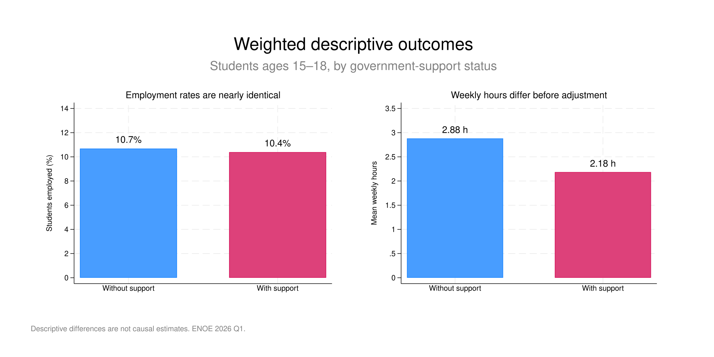
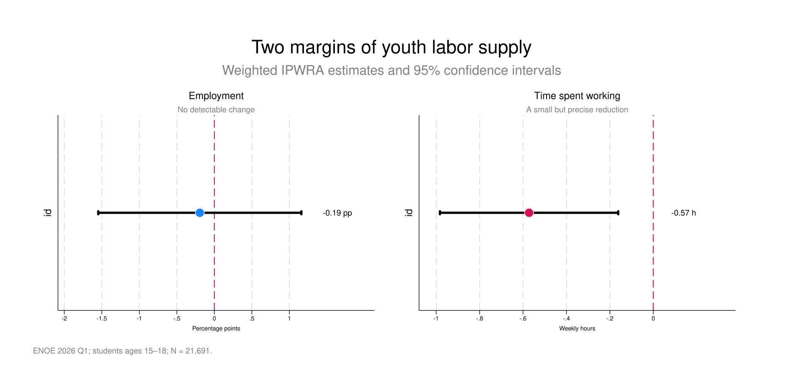

Employment
−0.19 pp p = 0.779 · no detectable changeEconomic research · 2026
Do government transfers change how much young students work?
An observational study using ENOE microdata and inverse-probability-weighted regression adjustment to examine two different margins of youth labor supply.
- Role
- Researcher
- Data
- ENOE 2026 Q1
- Sample
- 21,691 students
- Tools
- Stata · LaTeX
- Method
- IPWRA · ATET
Estimated association · weekly hours
−0.57
95% CI [−0.98, −0.16] · p = 0.006
Among students receiving government support
01
Overview
Working while studying is not a single decision. A student can remain employed but reduce the time devoted to work. That distinction shaped the project from the beginning.
Government support was not associated with a detectable change in employment, but it was associated with fewer weekly working hours.
The analysis focuses on students ages 15–18 in Mexico. Rather than treating a government transfer as automatically removing a student from work, it separates the extensive margin—whether someone is employed—from total weekly hours, including valid zeros.

02
Research design
01Merge
SDEMT + COE1 + COE2 using an audited individual key.
02Define
Students ages 15–18 and a treatment built from original P10 responses.
03Adjust
IPWRA with demographic, household, territorial, and state controls.
04Validate
Survey weights, common support, covariate balance, and alternative specifications.
The identification problem
Support recipients and non-recipients are not directly comparable. Age, household composition, location, and socioeconomic conditions can influence both program receipt and labor supply. IPWRA combines a treatment model with outcome regression to improve comparability on observed characteristics.
The main model controls for sex, categorical age, household size, urban–rural status, and state. The expanded specification adds other household members’ labor income and education level as a robustness check. ENOE’s quarterly expansion factor is incorporated as a probability weight.

03
What I found
Weekly hours
−0.57 h p = 0.006 · 95% CI [−0.98, −0.16]
Robustness across specifications
The estimated reduction remains below zero.
Points show the ATET; horizontal lines show 95% confidence intervals.
04
Age matters
The strongest secondary result appears at age 18, when students are closer to a more intensive transition into the labor market.
Students 15–17
−0.20 h 95% CI [−0.63, 0.23]Students age 18
−2.13 h 95% CI [−3.09, −1.17]
The age interaction is statistically significant, but the subgroup comparison remains observational and should not be interpreted as an experiment created by turning 18.
05
What this does not prove
IPWRA improves comparability and is doubly robust with respect to the treatment and outcome models. It does not remove bias from unobserved vulnerability, family preferences, school motivation, local shocks, or administrative assignment criteria absent from ENOE.
The treatment also captures government economic support broadly. The data do not identify a specific scholarship, its amount, or its duration. Accordingly, the results describe an adjusted association—not a definitive evaluation of any single program.